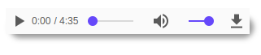

Classic  audio player widget
audio player widget
for Char field with URL to mp3, ogg,...
Play audio just in Odoo, without redirection to other pages
Now we can store audio files on anywhere, not just in our filestore servers. This will reduce the cargo on nginx of your file static server and the Odoo will work even faster.
With shadows and round edges in Firefox 57.0

and in Chrome 63.0 (with the same CSS)